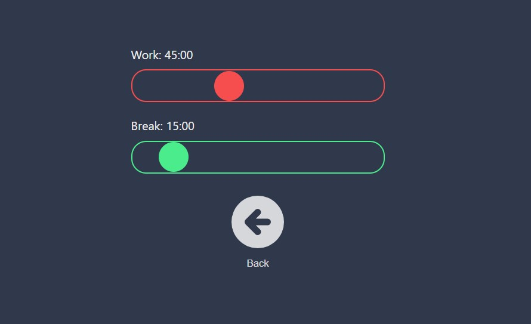
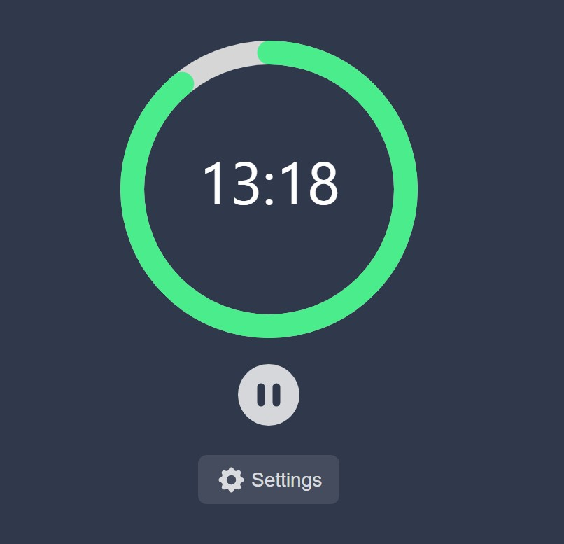

Pomidoro-timer
2022
Pet project
Developed on React.js the famous Pomidoro-Timer in time management.
View project
Although the project is banal and primitive, it helped me start to understand the basics of React in order to move on to more serious projects.
